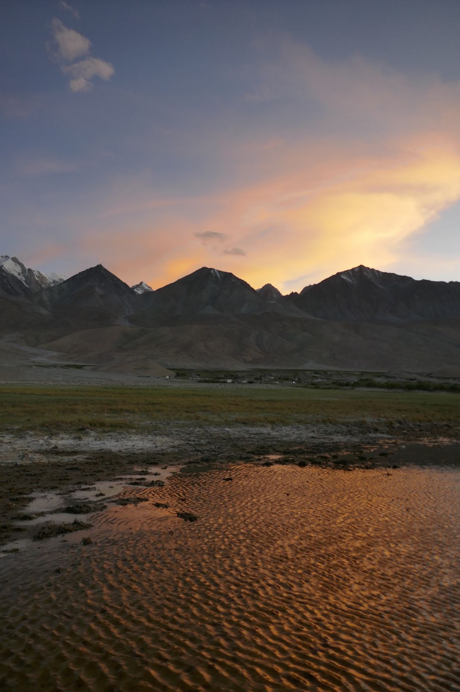
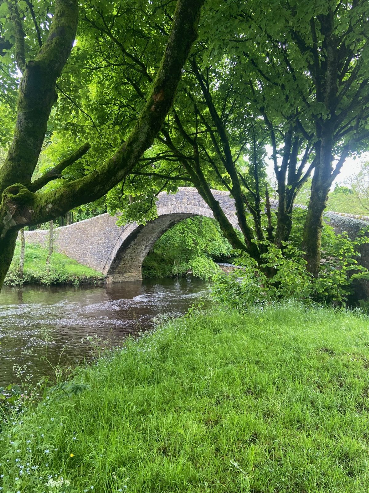
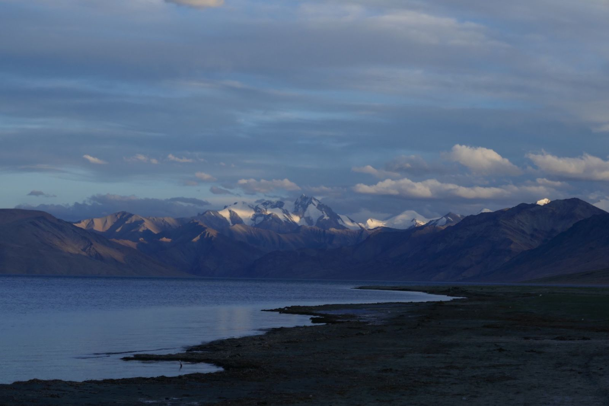

SS
How heavy industry in emerging markets gets the capital it needs to decarbonise, with a focus on steel in India.
Sangeeth Selvaraju is a Policy Fellow at the London School of Economics, affiliated with the Grantham Research Institute on Climate Change and the Environment and the Global School of Sustainability. His work covers private capital mobilisation, the cost of low-carbon steel capacity, the trade measures reshaping Indian exports, and the institutional capital that could finance the transition. More about me
Latest op-ed

Latest work
-
The climate–currency nexus
Grantham policy insight on climate shocks, hard-currency MDB debt and currency conversion clauses.
-
What the EU’s new steel regime means for India: smaller quotas, a higher penalty and a carbon price
Grantham commentary with Jesse Scott.

About
Sangeeth Selvaraju is a Policy Fellow at the London School of Economics, affiliated with the Grantham Research Institute on Climate Change and the Environment and the Global School of Sustainability. His research focuses on private capital mobilisation and the financing of industrial decarbonisation, particularly steel in India and other emerging markets.
His work sits between climate policy and finance. He studies capital costs and investment pipelines in Indian steel, how the EU’s Carbon Border Adjustment Mechanism and steel safeguard quotas affect Indian exporters, and how domestic and European institutional investors, national development banks and blended finance structures can support transition investment in emerging and developing economies.
Before joining LSE, he worked in investment banking at Moelis & Company and in cleantech advisory at Apricum. He has held research roles at the Mercator Research Institute, the Council on Energy, Environment and Water in New Delhi, and DIW Berlin, where he led multi-country climate finance and NDC work across India, Indonesia, South Africa and Brazil.
Experience
- London School of EconomicsPolicy Fellow, Grantham Research Institute and Global School of Sustainability
- DIW BerlinClimate finance and NDCs
- Mercator Research InstituteResearch
- Council on Energy, Environment and WaterResearch, New Delhi
- Apricum Cleantech AdvisoryCleantech advisory
- Moelis & CompanyInvestment banking
Research areas
Institutional capital for the transition
Emerging markets and developing economies need far more private capital than they currently attract. This strand looks at what would move domestic and global pension funds, insurers and sovereign wealth funds into transition assets at scale, and at the enabling environment around them: regulation, risk perception, the pipeline of investable projects, and the roles of national and multilateral development banks within the wider finance ecosystem. It runs across several related questions:
- Instruments. Transition bonds, sustainability-linked debt and other listed instruments, including what use-of-proceeds frameworks actually deliver and where labelling adds little.
- Structuring and products. How investment vehicles are put together in practice, from listed feeder funds and local-currency structures to securitisation, examined through case studies of what has and has not worked.
- Blended finance. Where concessional and catalytic capital genuinely crowds in private money, how junior tranches should be sized, and when blending is the wrong tool.
- The cost of capital. Why financing costs for the same technology differ so widely across countries, what drives the spread, and which interventions actually narrow it.
- Development finance and currency risk. National development banks, hard-currency debt in climate-vulnerable economies, currency conversion clauses, and the foreign exchange solutions that determine whether projects clear investment committees.
The EU–India relationship
The EU–India free trade agreement opens a set of win–win opportunities in clean technology: manufacturing supply chains, investment flows and technology partnerships that serve industrial strategy on both sides. This work examines where those complementarities are real, how European capital and Indian manufacturing capacity might be matched, and what trade and investment architecture would be needed to support it.
It sits alongside work on the trade measures that cut the other way. The EU’s Carbon Border Adjustment Mechanism, its revised steel safeguard quotas and India’s own Carbon Credit Trading Scheme interact in ways that reshape the economics for Indian exporters, and the firm-level exposure is uneven. Understanding who is affected, and how, is a precondition for sensible policy on either side.
Financing industrial decarbonisation
Heavy industry is where the transition is hardest to finance: assets are long-lived, margins are thin, and the low-carbon alternatives carry a capital cost premium that no single actor wants to absorb. This work quantifies that premium for Indian steel using capital costs per tonne and firm-level investment data, and traces the gap between conventional blast furnace routes and hydrogen-based steelmaking.
The questions extend beyond steel to aluminium, cement and the wider industrial base, and beyond India to other emerging markets facing the same problem. They also extend beyond the capital cost itself to what surrounds it: state support and its design, green public procurement and lead markets, carbon pricing, standards for low-carbon products, and the social contract around industrial communities whose jobs depend on these assets.
BF-BOF→H₂-DRI-EAF
Current research
-
CBAM and Indian steel exports
Research paper using 2025 firm-level export data matched to the emission intensity targets notified under India’s Carbon Credit Trading Scheme.
Finished outputs from this work are listed under Publications.

Publications
‘The climate–currency nexus: currency conversion as a means of reducing exposure to currency volatility in vulnerable economies’ (with Guillaume Bastos Martin and Alexander Weston), Policy insight, Grantham Research Institute on Climate Change and the Environment, London School of Economics, 2026. PDF
‘The implications of NITI Aayog’s net zero finance report for India: a tempered ambition’ (with Shantanu Srivastava, Labanya Prakash Jena and Venugopal Mothkoor), Policy brief, Grantham Research Institute on Climate Change and the Environment, London School of Economics, 2026. PDF
‘Decarbonising the aluminium sector in India: implications of the Carbon Credit Trading Scheme’ (with Parth Kumar), Policy brief, Grantham Research Institute on Climate Change and the Environment, London School of Economics, 2026. PDF
‘Finance and state support for low-carbon steel’, Policy report, Just Transition Finance Lab, Grantham Research Institute on Climate Change and the Environment, London School of Economics, 2025. PDF
‘Just Energy Transition Partnership grants and country platforms: lessons from Indonesia and South Africa’ (with Anisa Indah Pratiwi, Laura Sabogal and Viktor Ahlgren), Policy report, Just Transition Finance Lab, Grantham Research Institute on Climate Change and the Environment, London School of Economics, 2025. PDF
‘What does the Carbon Credit Trading Scheme mean for the Indian steel sector?’, Policy brief, Grantham Research Institute on Climate Change and the Environment, London School of Economics, 2025. PDF
‘Industry transition to climate neutrality: comparing policy approaches in times of geopolitical fragmentation’ (with Till Köveker, Fernanda Ballesteros, Franziska Klaucke, Antonia Kurz, Karsten Neuhoff and Paula Niemöller), DIW Berlin Discussion Paper 2114, 2025. PDF
‘Promoting a transition with inclusion in India: the role of Business Responsibility and Sustainability Reporting (BRSR)’, Policy report, Just Transition Finance Lab, Grantham Research Institute on Climate Change and the Environment, London School of Economics, 2025. PDF
‘Financing a Just Transition: transforming funding, tackling climate change’ (with Nick Robins and Shafaq Ashraf), Grantham Research Institute on Climate Change and the Environment, London School of Economics, 2024. PDF
‘The regulatory and market landscape for climate finance into India’s renewable energy sector’ (with Aman Srivastava, Srishti Jain, Heiner von Luepke and Emil Huth), DIW Berlin, SNAPFI project, 2024. PDF
‘Harnessing digital lending to empower MSMEs in India’s energy transition’ (with Shantanu Srivastava), Institute for Energy Economics and Financial Analysis, 2024. PDF
‘Sustainable finance for a just transition in India: the role of investors’ (with Nick Robins and Suranjali Tandon), Policy report, Just Transition Finance Lab, Grantham Research Institute on Climate Change and the Environment, London School of Economics, 2024. PDF
‘Negotiating the social contract for net zero: Port Talbot, steel and the just transition’ (with Nick Robins), Briefing, Just Transition Finance Lab, Grantham Research Institute on Climate Change and the Environment, London School of Economics, 2024. PDF
‘White paper: leveraging the spectrum of finance for just transitions’ (with Nick Robins, Hayley St. Dennis and John Morrison), Institute for Human Rights and Business, 2024.
‘The just transition: transforming the financial system to deliver action’ (with Nick Robins, Brendan Curran, Sasha Plyska, Sophia Tickell and Jodi-Ann Wang), Launch report, Just Transition Finance Lab, Grantham Research Institute on Climate Change and the Environment, London School of Economics, 2024. PDF
‘Financing decarbonization of the secondary steel sector in India: towards an enabling environment’, Grantham Research Institute on Climate Change and the Environment, London School of Economics, 2023. PDF
‘Submission to the UN Working Group on Business and Human Rights inquiry on investors, ESG and human rights’ (with Catherine Higham, Ian Higham and Brendan Curran), Grantham Research Institute on Climate Change and the Environment, London School of Economics, 2023. PDF
Op-eds
Opinion pieces in newspapers and magazines.
‘Navigating Europe’s regulatory maze’ (with Prachi Priya), Business Standard, 2026. Read View print clipping
‘India is fighting CBAM. It should also help shape the rules’ (with Jesse Scott), Mint, 2026. Read
‘How Budget FY27 builds sustainability to resilience and energy security’, Outlook Business, 2026. Read
‘How Asia’s steel expansion is creating carbon lock-ins’, Outlook Business, 2026. Read
‘Resilience and patience will be crucial for securing “just transition” financing in developing countries’, BusinessGreen, 2025. Read
‘Can India and the EU forge a successful green partnership amidst global challenges?’ (with Jesse Scott and Ignacio Garcia Bercero), The Economic Times, 2025. Read
‘A first step for steel sector decarbonisation: CCTS’, The Statesman, 2025. View print clipping
‘The EU steel “action plan” and its implications for India’, Moneycontrol, 2025. Read
‘How India’s financial regulators can align climate action with social equity’ (with Gaurav Upadhyay), Green Central Banking, 2025. Read
‘As green taxonomy fades, climate finance rises’ (with Labanya Prakash Jena), Outlook Business, 2025. Read
‘Why India needs climate finance for industrial decarbonisation’ (with Jesse Scott), Sustainable Views, 2025. Read
‘Bringing household savings for climate action in India’ (with Labanya Prakash Jena), illuminem, 2025. Read
Articles
Commentaries and shorter analytical pieces.
‘What the EU’s new steel regime means for India: smaller quotas, a higher penalty and a carbon price’ (with Jesse Scott), Commentary, Grantham Research Institute, 2026. Read
‘Rethinking the rush to regulate ESG rating providers’ (with Deepak Kumar, Gourishankar S Hiremath and Jitendra Mahakud), Commentary, Grantham Research Institute, 2026. Read
‘Asia’s steel expansion is creating carbon lock-in’ (with Mateus Getlinger Santomauro and Guillaume Bastos Martin), Commentary, Grantham Research Institute, 2026. Read
‘A bond for industrial decarbonisation’ (with Labanya Prakash Jena), Commentary, Grantham Research Institute, 2025. Read
‘Empowering the transition: key institutions in India’s climate finance landscape in 2025’ (with Vaibhav Pratap Singh), Commentary, Grantham Research Institute, 2025. Read
‘Are corporations allocating capital towards climate action?’ (with Shafaq Ashraf), Financing a Just Transition: transforming funding, tackling climate change, pp. 64–65, 2024. View article
‘Lifting the technology veil: analysing technology requirements for decarbonising steel and cement sectors in India’ (with Parth Kumar), Commentary, Grantham Research Institute, 2024. Read
‘From just transition pledges to practice: companies under the CA100+ microscope’ (with Shafaq Ashraf and Antonina Scheer), Commentary, Grantham Research Institute, 2024. Read
In the press
Coverage quoting or citing my work.
‘CBAM costs for Indian steelmakers unlikely to be as high as first feared’, edie, 2026. Read
‘Europe is funding steel decarbonisation, but progress is slow’, Sustainable Views, 2025. Read
‘Emergency law passed to force loss-making steel companies to keep operating’, 2025. Read
‘Saving steel: the fight to keep Europe’s industrial waste on its shores’, 2025. Read
‘Climate-finance takeaways from COP29’, Economist Enterprise, 2024. Read
‘Just transition: why investors are struggling to take advantage of it’, in French, 2024. Read
‘How five crucial elections in 2024 could shape climate action for decades’, 2024. Read
‘Not just yet’, 2024. Read
‘Nerves of steel’, 2024. Read
Audio-visual media
Radio, television and podcast appearances.
‘The true cost of climate change’, Podcast, 2025. Listen

Events
The India Convening: opening remarks and Plenary 1, ‘Emerging Impact Investing Opportunities for British Capital in India’
Gave the opening remarks at The India Convening, hosted by the Impact Investors Council with LSE, the Grantham Research Institute and the Impact Investing Institute, and moderated the first plenary with Nakul Zaveri (LeapFrog Investments), Nikesh Patel (Smart Pension and Church of England Pension Board), Priyanka Chopra (IIMA Ventures) and Salvador Vidal (Symbiotics Investments).
Financing Resilience in a Fragmenting World
Moderated two panels: ‘Repricing the Risk Map: Climate, Conflict, AI and the Future of Insurable Risk’, with Angus Kirk (Global Parametrics), Archie Hayton (FCDO), Matt Robinson (Moody’s) and Nick Hardaker (MS Amlin); and ‘Systemic Risk and the Limits of Insurability’, with Mark Patrick (Nuveen), Guillaume Watkins (MS Amlin), Lesley Pories (WaterAid), Ekhosuehi Iyahen (Insurance Development Forum) and Martin Burke (MS Amlin).
Listed Capital for the Global South: Mobilising Institutional Investment in Emerging Market Climate Infrastructure
ET India Net Zero Forum 2026 (4th edition)
Speaker: Policy Fellow (Sustainable Finance, India and ASEAN), LSE Grantham Research Institute on Climate Change and the Environment.
Mobilising UK Institutional Capital for India
‘Unlocking UK Pension Capital for India’s Climate Transition and Resilience’, hosted by the High Commission of India with the LSE Grantham Research Institute, followed by a roundtable at LSE on mobilising UK pension capital for transition investment in India.
IGSN Third Annual Convening: Accelerating India’s green steel action
Speaker at the convening of the India Green Steel Network (IGSN), with Shantanu Srivastava, Carole Ferguson, Govind Vasishta and Dr Amrita Goldar.
Green Horizons: Leveraging the EU–India Partnership for Climate Action
Moderated the webinar launching the CSDR–Heinrich Böll Stiftung policy brief on climate action and the green economy in the EU–India partnership, with Shuva Raha, Jesse Scott and Caroline Edery. Event page
APCEL Conference: Just Transition in Southeast Asia
IEEFA Energy Finance Conference 2024: workshop on the JETP and just transition
Speaker at the workshop on Just Energy Transition Partnerships (JETPs) and the just transition, at IEEFA’s conference ‘Accelerating the Energy Transition in Asia’, with Ajay Kumar Rastogi, Swati Dsouza, Putu Indy Gardian, Dinita Setyawati and Pradip Swarnakar, moderated by Grant Hauber.
World Steel Association: Open Forum
Speaker and presenter at the worldsteel Climate Action Open Forum, worldsteel Association, 2024.
Contact
Grantham Research Institute on Climate Change and the EnvironmentLondon School of Economics and Political Science
Houghton Street
London WC2A 2AE
For email and media enquiries, see the Grantham profile.